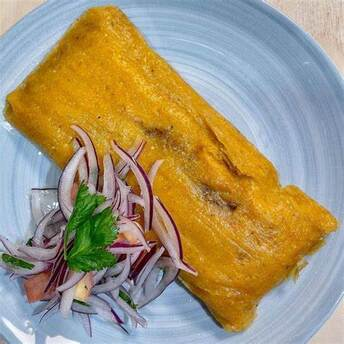
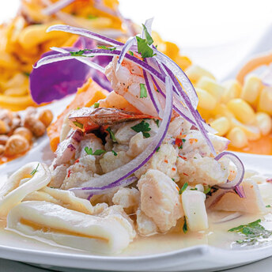
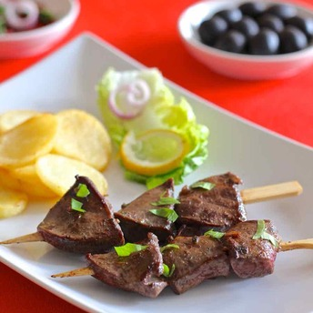

Picarones
Dulces fritos en aceite vegetas hechos con masa de camote y zapallo, bañados en miel de chancaca.
Ver Receta
Arroz Zambito
Postre a base de arroz, leche, chancaca y frutas secas, similar al arroz con leche pero más dulce.
Ver Receta
Arroz con Leche y Mazamorra
Una combinación de Arroz con Leche cremoso y Mazamorra Morada con maíz morado, frutas y especias.
Ver Receta



Papa Rellena
Papa frita rellena de carne, cebolla y especias, acompañada de salsa criolla.
Ver Receta
Ceviche de Pollo
Trozos de pollo marinados en jugo de limón, cebolla y ají, servidos con maíz y camote.
Ver Receta